Hi everyone! Today I will analyze the machine called "Lianyu" on the TryHackMe platform. Before you begin, please make sure to add your IPv4 address to /etc/hosts.
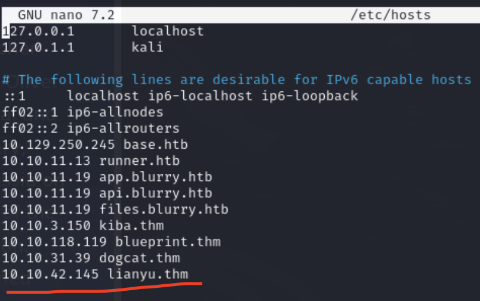
Firstly, run your VPN configuration file then try to ping the target so that you can understand whether you can communicate with target server or not.
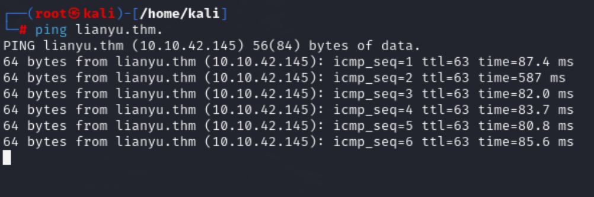
Gotcha !
Checking the most common ports is beneficial due to the time constraints typically involved in penetration testing.
Payload:
curl http://lianyu.thm:80
curl http://lianyu.thm:8080
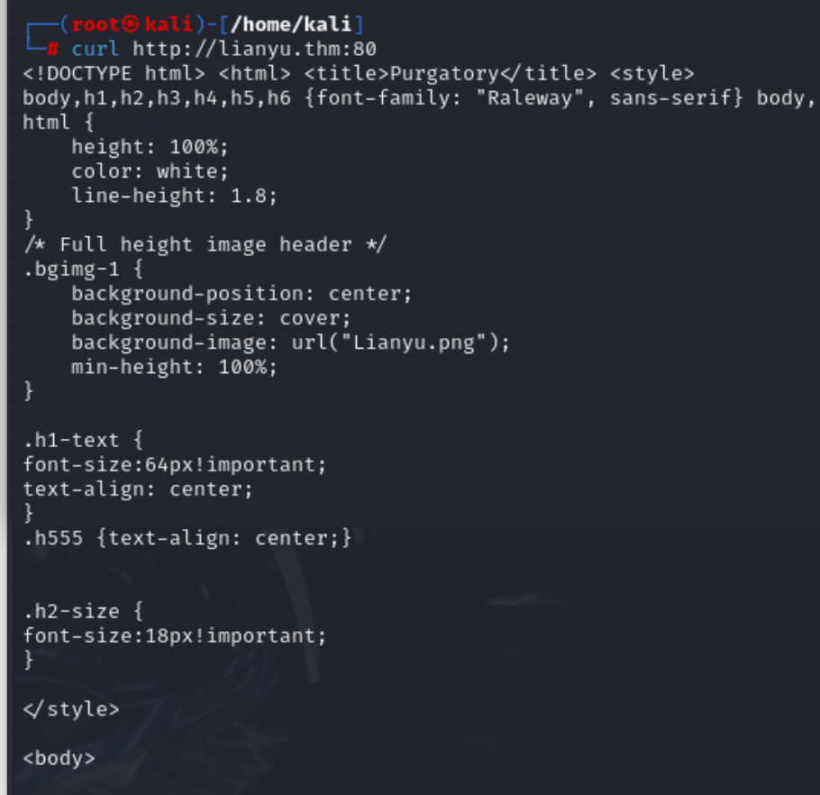
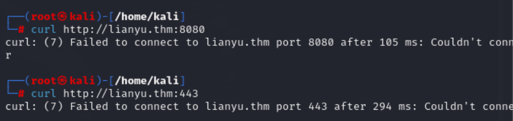
As you can see, there are no applications running on ports 8080 and 443.
Wappalyzer only identified the web server software.
Since there was nothing interesting in the page source, I moved on to automated reconnaissance. After running common.txt from the dirb directory, I decided to use directory-list-2.3-medium.txt, which revealed only one endpoint in the web application:
dirsearch -u http://lianyu.thm -w/usr/share/wordlists/SecLists/Discovery/Web-Content/directory-list-2.3-medium. txt
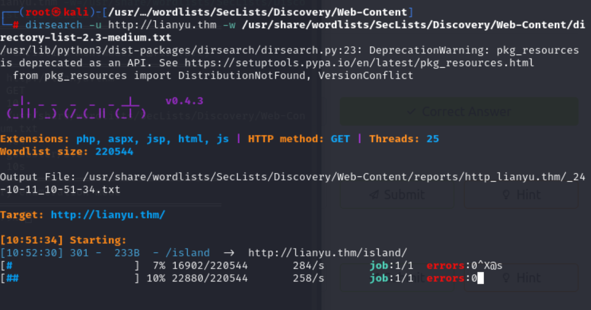
I also applied extended fuzzing on the /island endpoint. Using directory-list-2.3-medium.txt was a good choice. I highly recommend dirsearch for fast fuzzing sessions.
However, since I was on the Bilkent Network, I could not use all the payloads in directory-list-2.3-medium.txt. The tool appeared to have some bugs, as shown below.
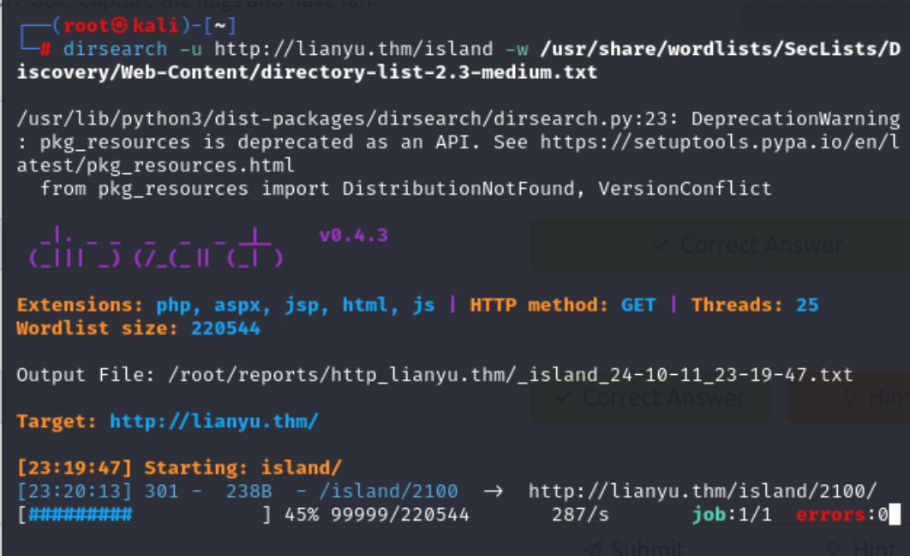
Next, I switched to the 2100 endpoint. This is what the HTML rendered:
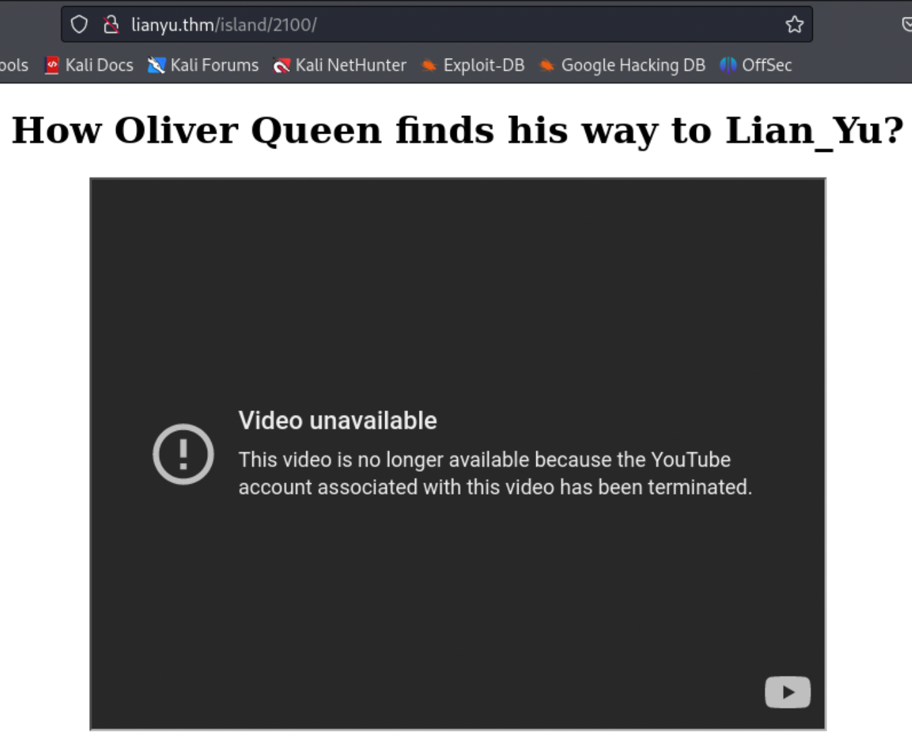
The HTML source indicated an extension .ticket. I needed to fuzz both the 2100 endpoint and the .ticket extension. Using the -h parameter did not help much, so I checked the manual pages and found the appropriate parameter for handling extensions.
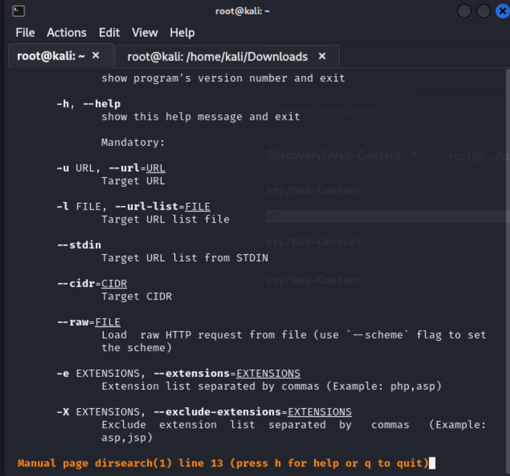
By using the -e parameter, we can target .ticket extension files.
Even though Dirsearch didn’t find anything, I switched to my B plan, which was Gobuster. Remember to be patient during fuzzing phases !
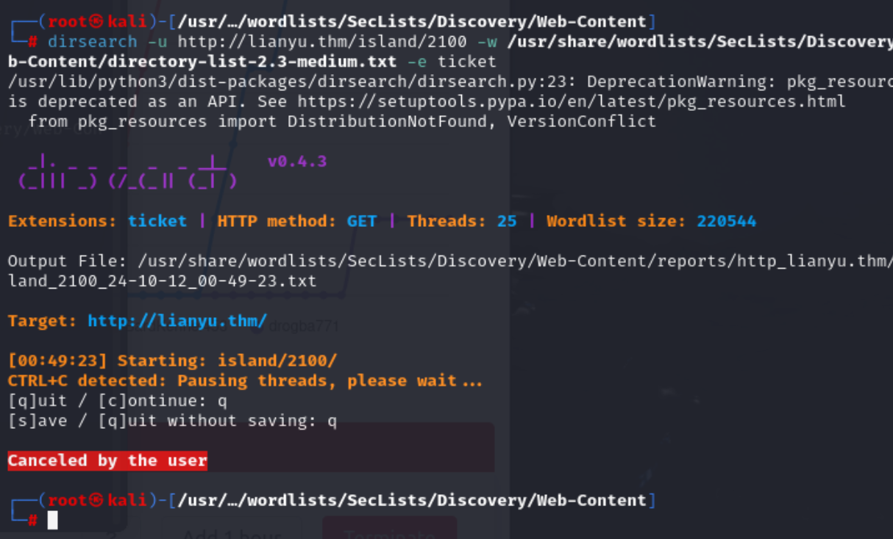
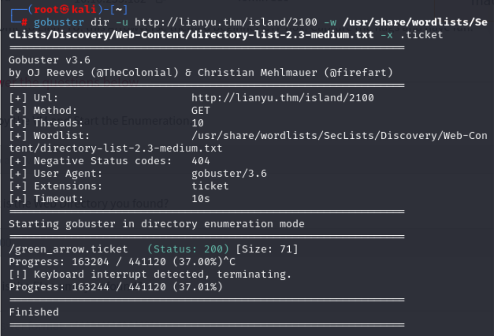
I found an interesting string: RTy8yhBQdscX. This appeared to be in an encoded format.
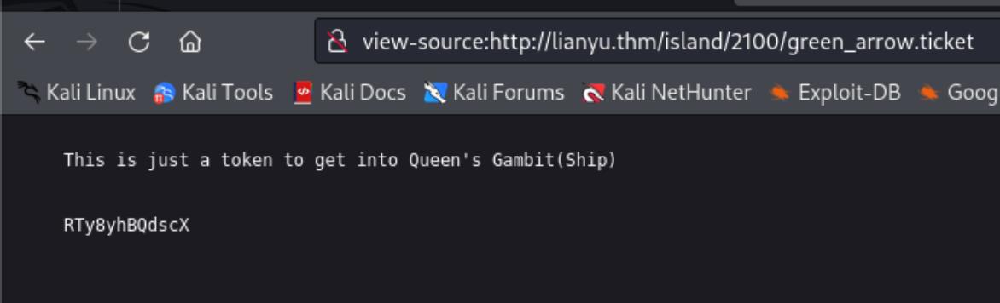
Cyberchef couldn't decode it, but dCode suggested several possible decoding methods, from the PlayFair cipher to the Substitution cipher.
dcode detected many options for decoding resulting from PlayFair Cipher to Substitution Cipher.
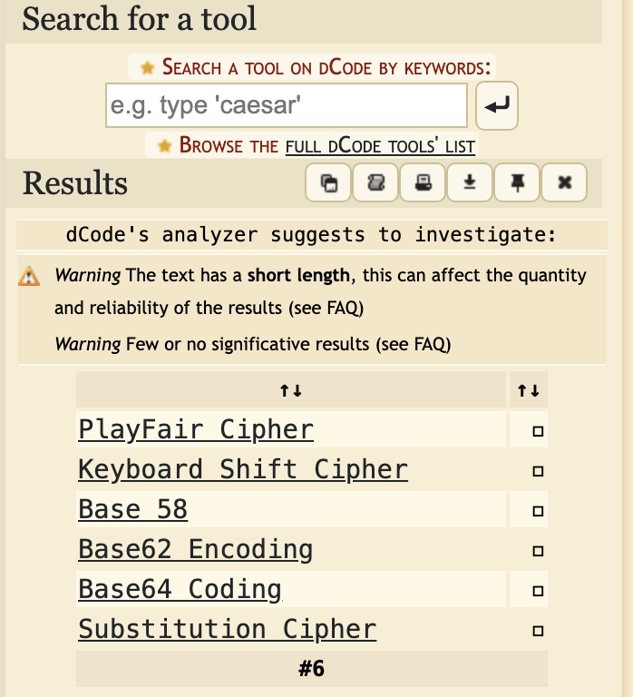
After trying multiple options, the most meaningful result came from Base58:
!#th3h00d
``` Ohhh Noo, Don't Talk...............
I wasn't Expecting You at this Moment. I will meet you there
You should find a way to Lian_Yu as we are planed. The Code Word is: vigilante ```
I suspected that vigilante might be the username and !#th3h00d the password. I tried this combination on the FTP server.
GOTCHA ! ! !

Once logged in, interacting with FTP was crucial for downloading files.
To list directories and files, use:
``` ls -al
dir ```
To download files from FTP client:
GET [File_Name]
Unless you understand, check it below:

Since my files are located on /usr/share/wordlists/SecLists/Discovery/Web-Content, I wanted to move them to my Desktop directory.
mv Leave_me_alone.png aa.jpg Queen\'s_Gambit.png ../../../../../../home/kali/Desktop
I needed to use steganography techniques to analyze the image files. Initially, I ran exiftool, but no valuable data was found in most images. However, one image, Leave_me_alone.png, did not match its file format.
After a couple of attempt, I did not find juicy data on images ,but one of the instance did not match its file format called Leave_me_alone.png.
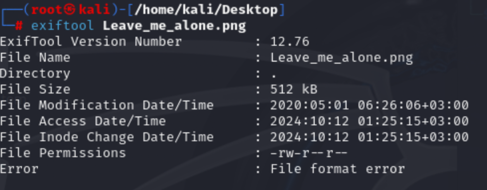
A normal result should looked like that:
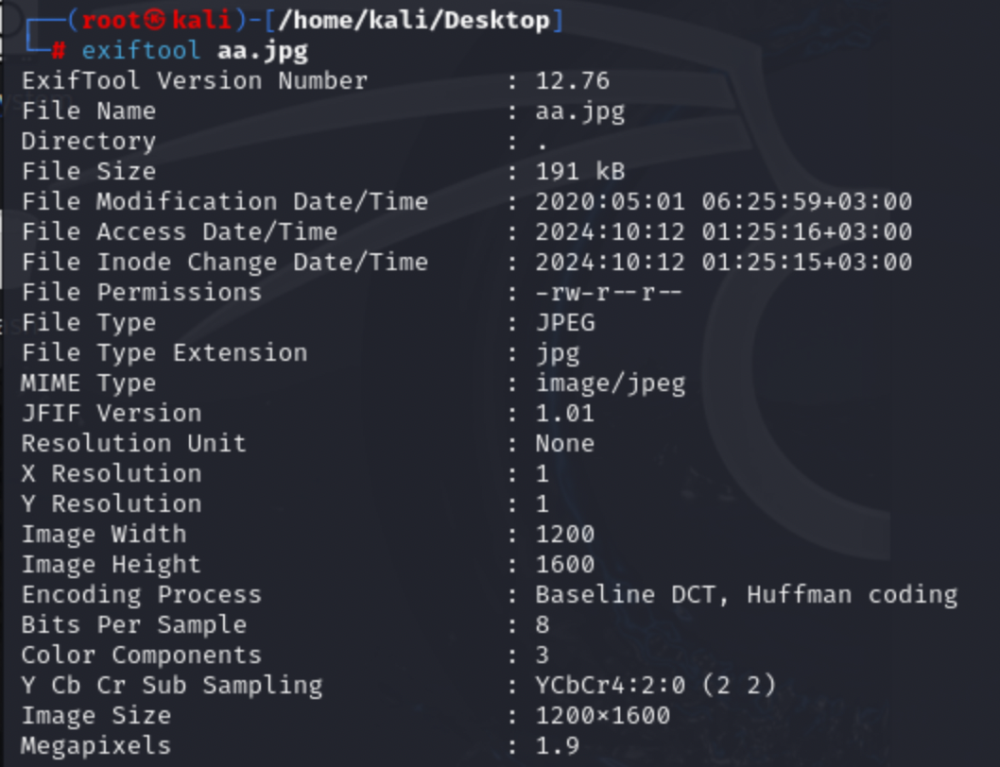
You can also verify through Image Viewer which is a default image application in kali environment.
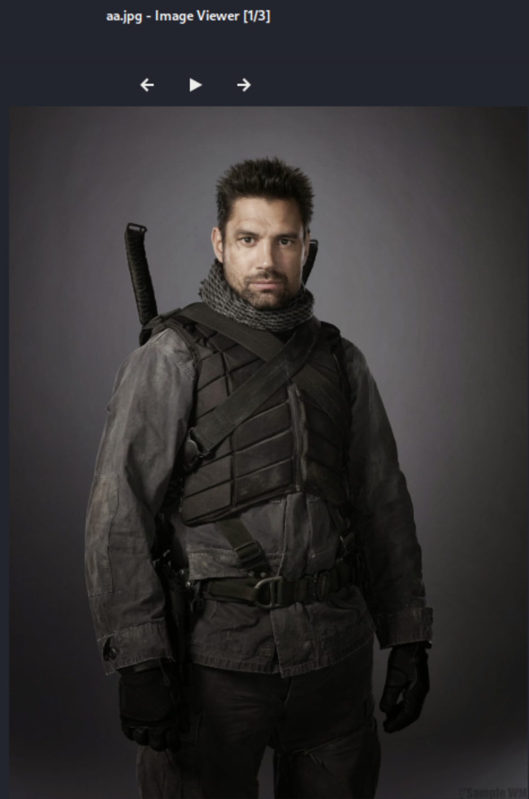
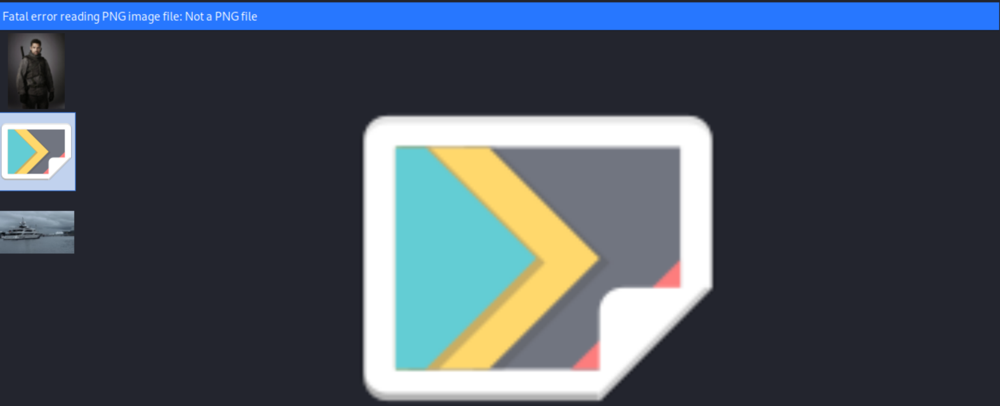
Further image analyze must be done ,so let's use hexedit and modify its first line. As you can see below, leavemealone does not match with .PNG format. Moreover, you can reach out the long description and magic numbers of many extension from here: File Magic Numbers .
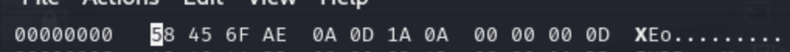
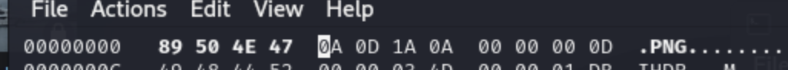
In my first attempt, I could not convert correct format ,but I found a different source giving full format of PNG. On this website you will find appropriate format.
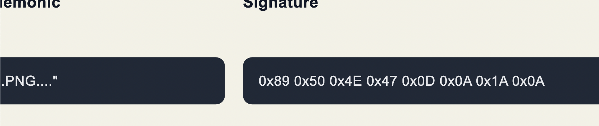
At first, I tried this password on SSH, but it didn’t work. Later, Kali hinted that steghide could be useful as the image likely contained hidden data.
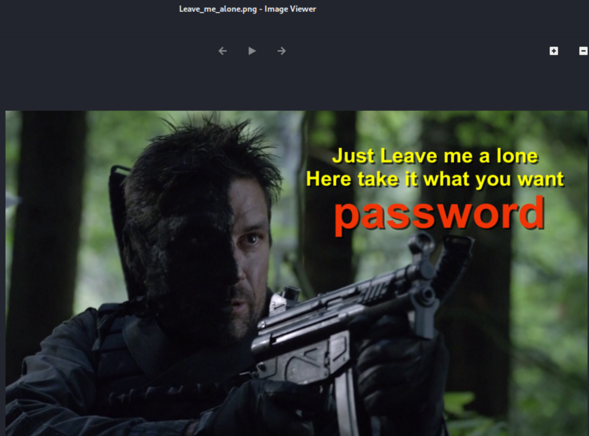
┌──(root㉿kali)-[/home/kali/Desktop]
└─# steghide extract -sf Leave_me_alone.png
Enter passphrase:
steghide: the file format of the file "Leave_me_alone.png" is not supported.
Maybe other image formats may work:
┌──(root㉿kali)-[/home/kali]
└─# steghide extract -sf aa.jpg
Enter passphrase:
wrote extracted data to "ss.zip".
YES !
Furthermore, the man appeared was the same as aa.jpg and Leave_me_alone.png. Anyway, use unzip to extract data inside the archive.
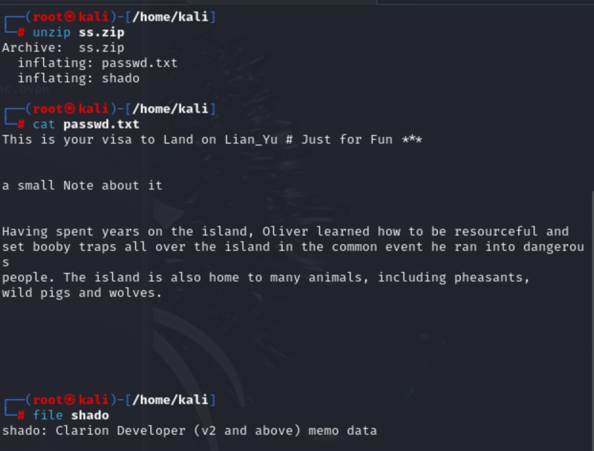
Content of the passwd.txt:
``` This is your visa to Land on Lian_Yu # Just for Fun *
a small Note about it
Having spent years on the island, Oliver learned how to be resourceful and set booby traps all over the island in the common event he ran into dangerous people. The island is also home to many animals, including pheasants, wild pigs and wolves. ```
The file also contained a small note about traps set on the island. I now had what seemed to be an SSH password but no username.
Obtain a string most likely password of the SSH.
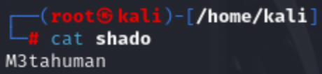
However, I could not find any username for it. Vigilante did not work. I instantly move on FTP again. There was a hidden file named .other_user.
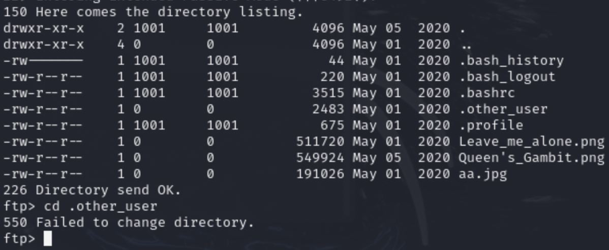
I returned to the FTP server, where I discovered a hidden file named .other_user. Accessing it was impossible, so I explored the parent directory on FTP.
GOTCHA ! ! !
I found a different user rather than vigilante:
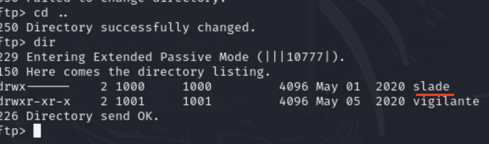
I successfully reached the target instance through SSH with this credential:
user:pass
slade:M3tahuman
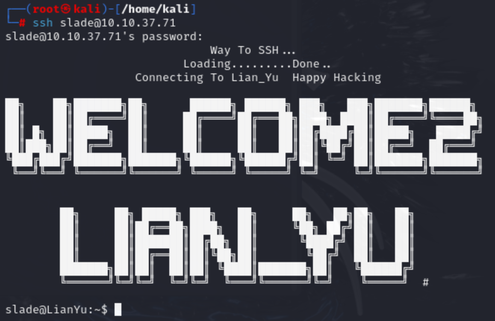
Get your user flag from here:
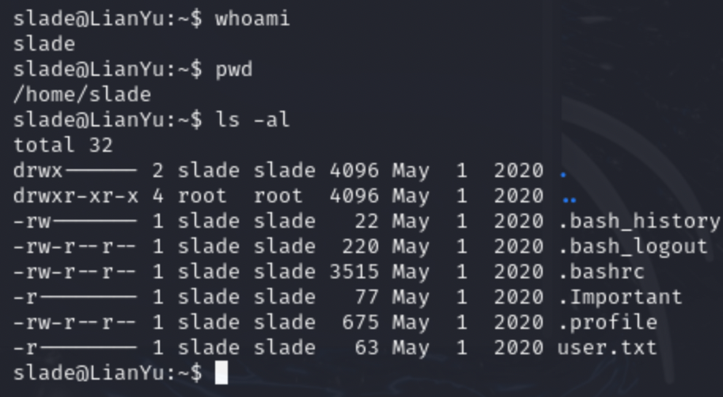
Once inside, I checked the commands I could run on the slade account:
sudo -l
Give its password:
slade@LianYu:~$ sudo -l
[sudo] password for slade: #M3tahuman
Matching Defaults entries for slade on LianYu:
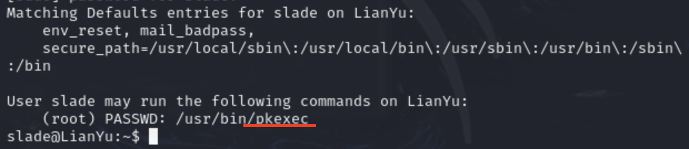
The binary pkexec was available, which could be exploited for privilege escalation.
According to GTFOBins, pkexec allows us to execute commands as another user, typically with root privileges.
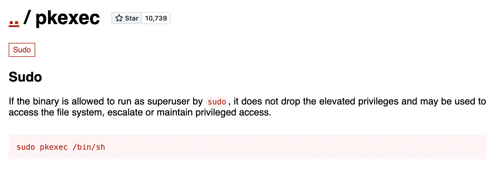
What exactly pkexec does ?
pkexec is part of the PolicyKit package and it is used to execute commands as another user. Typically with root privileges. By using /bin/sh with sudo target may deploy a shell with root privileges.
YESSS !!!!
By using this method, I gained root access and obtained the final flag from the same directory.
Reach out the PoC of the binary exploitation.
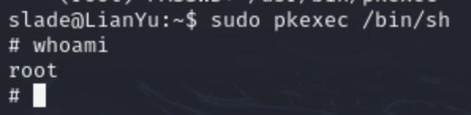
Get your flag directly on the same directory:
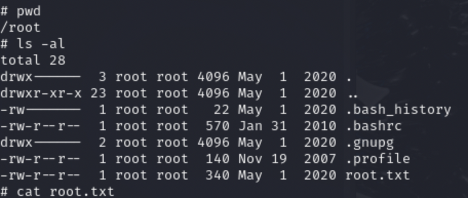
May The Pentest Be With You ! ! !